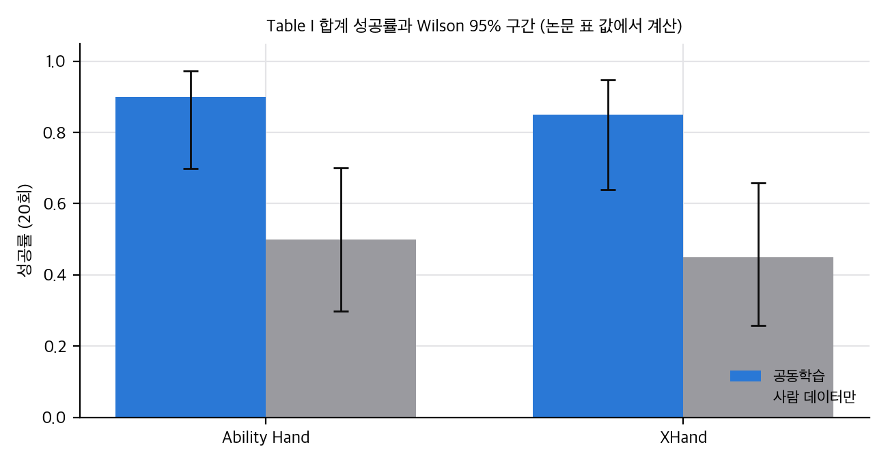
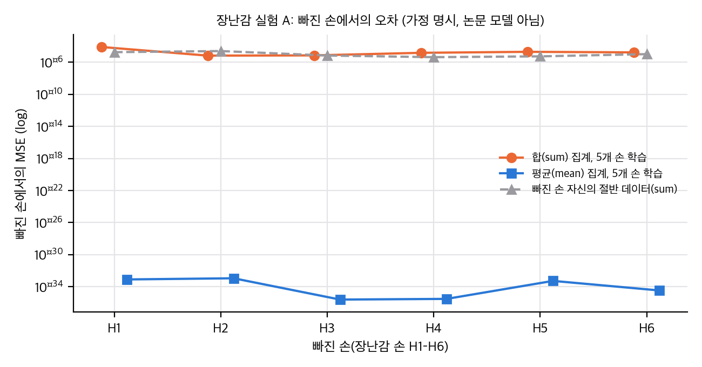
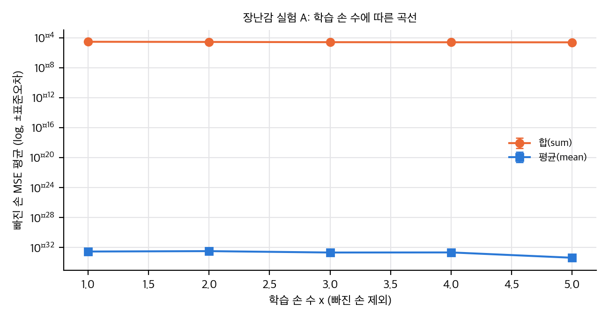
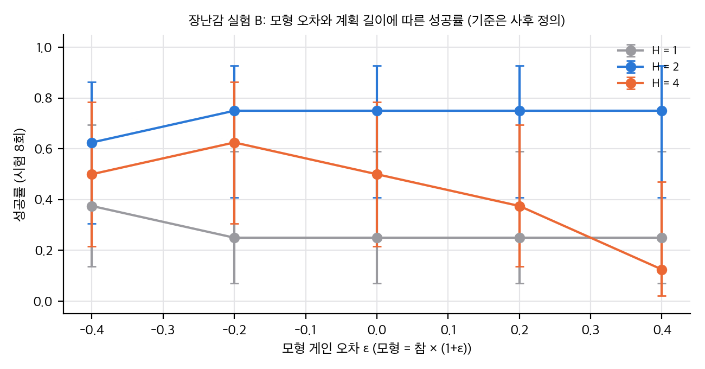

03 §4, 04 C1–C3).04 C9).03 §2).04 C13).04 §4).[your-repo] 자리표시자 그대로입니다. 4절 참고)paper/paper.pdf(v3, 8쪽, 5.3 MB), paper/paper.txt. v1 비교용 PDF와 텍스트는 .scratch/에 있습니다(gitignore).논문이 직접 쓴 한계는 없습니다. v3에는 Limitations 절이 없고, 결론에서 한 줄("future direction")만 있습니다. 본문에서 저자가 스스로 제기한 점은 다음과 같습니다.
우리가 본 한계:
v1(2025-11-03)과 v3(2026-07-21)의 본문(둘 다 8쪽)을 텍스트로 대조했습니다(.scratch/paper_v1.txt, paper/paper.txt). 숫자는 PDF 표·캡션과 본문에서 확인했습니다.
| 항목 | v1 | v3 | 의미 |
|---|---|---|---|
| 상태·학회 | 학회 표기 없음 | abs 댓글 "Accepted to IROS 2026" | 채택 확인은 abs 페이지 기준, 본문에는 없음 |
| 저자 소속 | 대학 4곳과 기업 소속 1곳 | 대학 4곳과 기업 소속 1곳(기업 이름과 소속 인원 변경) | 소속 목록 변경(이름은 공개본에서 뺌) |
| 계획 알고리즘 | cross-entropy method(MPC) | sampling-based MPC, 후보 500 · H=4 · 반복 10 · 실행 2 · 60 s | v3에서 수치가 생김 |
| 파티클 수·반경 | 없음 | 점토 300/200 (r 0.025/0.04), 밀기 100/50 (r 0.04) | v3에서 생김 |
| 비용 함수 | CD 또는 EMD | J = L_CD + L_EMD(같은 가중치) | v3가 더 구체적 |
| 기준선 | 없음(목표 전용만) | PT [58] 기준선, Equal Data 점선 | Fig. 2 캡션 변경 |
| 실물 결과 | 손당 CD/EMD 합계만 | 글자별 CD/EMD와 성공 횟수(18/20 대 10/20 등) | 실물 성공률은 v3에서 처음 나옴 |
| Table I 합계 CI | 공동학습: Ability 6.95±0.10, 4.92±0.13; XHand 6.85±0.13, 4.78±0.15 / 사람만: Ability 7.15±0.12, 5.23±0.17; XHand 7.22±0.19, 5.18±0.22 | 공동학습: 6.95±0.10, 4.92±0.13; 6.85±0.12, 4.78±0.14 / 사람만: 7.15±0.16, 5.23±0.23; 7.22±0.18, 5.18±0.21 | 평균은 그대로이고 CI 일부가 바뀜. 이유는 적혀 있지 않음 |
| 실물 결과 문장 | "We will further verify the benefits ... through system deployment" | 배포 결과(Table I, Fig. 4) | v1의 약속을 v3가 채움 |
| 사람 데이터 평가 caveat | "these evaluations are on human data only ... approximations of the target domain" | 해당 문장 없음 | v3에서 caveat 삭제 |
| 참고문헌 | 2025년 이전 중심 | π0.7(2026), EgoVerse(2026) 등 추가 | 인용 갱신 |
| 시간 대응 | Fig. 5 설명에 CD/EMD 사용 이유 | 같음, 표현만 조금 다름 | 변화 없음 |
v1 → v3에서 주장은 같고 근거가 늘었습니다. 실물 성공률과 계획 설정이 추가되었고, 기준선 PT와 Equal Data가 추가되었습니다. 그러나 Fig. 5의 "1:1 최적" 문장은 두 판본 모두 그대로입니다(3.3절).
대상: arXiv:2511.01177 v3. 재계산 스크립트: analysis/table_check.py(→ table_check_results.json), analysis/particle_toy.py(→ particle_toy_results.json, 약 2분 30초, numpy 1스레드). 그림: analysis/plot_figures.py.
논문에는 Table I(실물)만 숫자 표로 있습니다. Fig. 2와 Fig. 5는 그림이고 원자료가 없어서, 그림에서 읽은 값은 근사치로만 씁니다.
| 대상 | 입력 | 한 일 |
|---|---|---|
| Table I 성공 횟수 | 글자별 5회, 손·방법별 20회 | Wilson 95%, Fisher 정확검정, Cochran–Mantel–Haenszel(글자 층) |
| Table I CD/EMD | 합계 평균±95% CI(n = 20), 글자별 n = 5 | CI에서 표준편차 역산, Welch t, Holm 보정 |
| 표본 크기 | 성공률 0.9 대 0.5, 0.85 대 0.5 | 두 비율 검정력 공식과 정규근사 검정력 |
| Fig. 2 학습 실행 수 | 나머지 5손에서 부분집합 C(5, x) | 개수 계산 (x = 1–5: 5, 10, 10, 5, 1) |
| 장난감 실험 A, B | 2차원 시뮬레이션 | 2절의 설계 |

직접 계산: Table I 합계 성공률과 Wilson 95% 구간(논문 표 값에서 계산).
성공 횟수 (손별 합계 20회)
| 손 | 공동학습 | 사람만 | Wilson 95% (공동 / 사람) | Fisher p | CMH OR (95% RBG) | CMH p | Holm (4개 검정) |
|---|---|---|---|---|---|---|---|
| Ability | 18/20 | 10/20 | 0.70–0.97 / 0.30–0.70 | 0.0138 | 14.3 (1.06–194) | 0.0053 | 0.028 (Fisher), 0.021 (CMH) |
| XHand | 17/20 | 9/20 | 0.64–0.95 / 0.26–0.66 | 0.0187 | 11.0 (1.09–111) | 0.0066 | 0.028, 0.021 |
table_check_results.json에 있습니다.CD/EMD (합계 n = 20, Welch, 보정 전 p; 보정은 4개 검정)
| 손 | 지표 | 차이 (공동 − 사람, ×10⁻³) | t | p | Holm |
|---|---|---|---|---|---|
| Ability | CD | −0.20 | −2.22 | 0.034 | 0.040 |
| Ability | EMD | −0.31 | −2.46 | 0.020 | 0.040 |
| XHand | CD | −0.37 | −3.58 | 0.0011 | 0.0043 |
| XHand | EMD | −0.40 | −3.32 | 0.0022 | 0.0066 |
t(0.975, 19) · s/√20입니다. 논문이 CI를 어떻게 정의했는지(시도 단위인지 글자 단위인지)는 적혀 있지 않습니다. 이 가정이 틀리면 p 값이 달라집니다.(a) 계획 계산량. 한 번의 계획 갱신 = 후보 500 × 반복 10 × 계획 길이 H = 4 = 20,000 단계 예측. RTX 4090에서 60초이면 단계당 약 3 ms입니다. 재계획 횟수가 없어서 시도당 시간은 계산할 수 없습니다.
(b) 파티클 집계의 밀도 의존성. 물체 입자 i에 대해 접촉 가중 합 S_i = Σ_j w_ij δ_j, 가중 평균 M_i = S_i / Σ_j w_ij입니다. 입자 간격이 1/√ρ 배로 줄어 접촉 이웃 수가 ρ에 비례하면 E[Σ_j w_ij] ∝ ρ이므로, S_i의 기대 크기는 ρ에 비례하고 M_i는 ρ에 무관합니다. 참 세계가 평균형이면 합 집계 모형은 학습한 게인 κ가 밀도에 묶입니다. 이 점은 논문의 그래프 밀도 가설(IV-B)과 연결되지만, 실제 DPI-Net은 학습된 MLP라 이 단순 계산이 그대로 적용되지는 않습니다.
(c) 학습 조건과 샘플 수. 목표 손 하나를 뺄 때 나머지는 5개입니다. x개를 고르는 부분집합은 C(5, x) = 5, 10, 10, 5, 1개입니다(합 31). x = 5는 부분집합이 하나뿐이므로 그 점의 오차 막대는 부분집합 분산이 아니라 학습 시드 분산이어야 합니다. 논문에 시드 수는 없습니다. 목표 손 하나당 학습 조건은 31 + 목표 전용 + Equal Data = 33개, 두 과제·두 방법(Ours, PT)을 합치면 약 264회 학습입니다(시드 제외).
(d) 데이터량 대조. 손당 100 궤적이라 x = 5의 총량은 500 궤적, 목표 전용 기준은 100, Equal Data 기준은 500입니다. 따라서 "x = 5 대 목표 전용(100)"은 데이터량이 다른 비교입니다. 데이터량을 맞춘 비교는 Equal Data 점선뿐입니다(4절).
Fig. 2 (로그 축, 시각 판독). 평평하다고 읽은 패널을 제외하고, 다음이 보입니다.
Fig. 5 (막대, ×10⁻², 근사).
| 비율(범례) | 0 (사람만) | 0.2 | 0.5 | 0.8 | 1.0 |
|---|---|---|---|---|---|
| 밀기 | ≈2.85 | ≈2.9 | ≈2.65 | ≈3.2 | ≈5.0 |
| 점토 | ≈0.71 | ≈0.66 | ≈0.57 | ≈0.72 | ≈1.20 |
장난감 세계: 2차원 평면, 2관절 팔 여섯 개(링크 길이와 입자 간격이 다름, 손 입자 수 9–19), 물체는 입자 30개. 참 세계의 물체 변위는 접촉 가중 평균 손 변위에 게이트를 곱한 평균형입니다(차수 불변). 이 설정 자체가 "평균 집계 모형이 맞다"를 보장하므로, 실험 A의 mean 결과는 구조가 같아서 생긴 결과이지 교차 손 일반화의 증거가 아닙니다. 이 점을 먼저 밝힙니다.

직접 계산(장난감): 빠진 손 MSE, 집계 방식(sum 대 mean) 비교. 논문 모델이 아님.

직접 계산(장난감): 학습 손 수 x에 따른 평균 MSE.
실험 A: 빠진 손 검증 (leave-one-hand-out, 손당 40 에피소드).
| 빠진 손 | 입자 수 | 입자 간격 | 반경 내 평균 이웃 | 합(sum) 5손 학습 MSE | 평균(mean) 5손 학습 MSE | 빠진 손 자체 학습 MSE (sum) |
|---|---|---|---|---|---|---|
| H1 짧은·촘촘 | 19 | 0.015 | 1.57 | 8.0×10⁻⁵ | 8.2×10⁻³⁴ | 1.8×10⁻⁵ |
| H2 짧은·보통 | 11 | 0.025 | 0.36 | 6.7×10⁻⁶ | 1.1×10⁻³³ | 2.5×10⁻⁵ |
| H3 중간·보통 | 13 | 0.030 | 0.41 | 7.2×10⁻⁶ | 2.5×10⁻³⁶ | 6.9×10⁻⁶ |
| H4 중간·성김 | 9 | 0.045 | 1.38 | 1.5×10⁻⁵ | 3.1×10⁻³⁶ | 4.3×10⁻⁶ |
| H5 긴·성김 | 11 | 0.050 | 0.96 | 2.0×10⁻⁵ | 5.4×10⁻³⁴ | 5.5×10⁻⁶ |
| H6 긴·보통 | 15 | 0.035 | 0.61 | 1.7×10⁻⁵ | 3.5×10⁻³⁵ | 1.0×10⁻⁵ |

직접 계산(장난감): 모형 게인 오차와 계획 길이에 따른 성공률.
실험 B: 모형 오차와 계획 길이 (MPC, 시험 8회). 계획은 후보 500, 반복 10, 엘리트 50, 재계획 6회, 앞 2단계 실행, 모형 게인 = 참 게인 × (1+ε), 참 게인 0.8. 성공 기준은 사후에 정했습니다: 참 세계 ε = 0, H = 4의 최종 Chamfer 중앙값(0.0402)입니다. 기준 자체가 결과에 의존하므로 절대 성공률은 의미가 없습니다.
| H | ε = −0.4 | −0.2 | 0 | +0.2 | +0.4 |
|---|---|---|---|---|---|
| 1 | 3/8 | 2/8 | 2/8 | 2/8 | 2/8 |
| 2 | 5/8 | 6/8 | 6/8 | 6/8 | 6/8 |
| 4 | 4/8 | 5/8 | 4/8 | 3/8 | 1/8 |
스크립트: analysis/extra_density_sweep.py → analysis/extra_density_sweep_results.json (numpy 단일 스레드, 1초 미만). particle_toy.py의 함수를 재사용한다.
목적. §5의 실험 A는 손의 형상과 밀도가 함께 달라서 밀도 효과를 따로 보지 못했다. 팔 형상을 고정하고 입자 간격만 바꿔서, 밀도가 합 집계와 평균 집계의 일반화에 주는 영향을 분리한다. 참 세계가 평균형인지 합형인지에 따라 결론이 어떻게 뒤집히는지도 본다.
설정(가정).
particle_toy.py의 2차원 2관절 팔(링크 0.14·0.12 m), 접촉 반경 0.05 m, 게이트 0.5, 물체 입자 30개를 그대로 쓴다.true_step), S(합형, κ_s Σ_j w_ij δ_j). κ_s = 1.166으로, h = 0.025에서 두 집계 특징의 RMS 크기가 같도록 정했다.결과.
물체 입자당 접촉 이웃 수와 손당 입자 수는 다음과 같다.
| 간격 h (m) | 0.010 | 0.015 | 0.025 | 0.040 | 0.060 |
|---|---|---|---|---|---|
| 손 입자 수 | 28 | 19 | 11 | 8 | 6 |
| 물체 입자당 접촉 이웃 수 | 3.10 | 2.07 | 1.71 | 0.47 | 0.14 |
참 세계가 평균형(M)인 경우:
참 세계가 합형(S)인 경우:
특징 크기의 밀도 기울기(로그-로그)는 합 집계 0.28, 평균 집계 0.08이다. 이론값은 합 1, 평균 0이다.
결론.
목적. 추가 검증 1의 2차원 결과(밀도가 바뀌면 합 집계의 최적 κ가 밀도를 따라 움직인다)가 3차원 손 기하에서도 나타나는지 봅니다. 손 3종을 MuJoCo로 만들어 입자를 링크 축을 따라 배치했습니다. 결과는 analysis/extra_particle_3d_results.json에 있습니다.
설정. 스크립트는 analysis/extra_particle_3d.py입니다.
결과. 시험 손 C의 상대 MSE, 시험 밀도 0.010 / 0.025 / 0.060 m 순서.
| 참 세계 | 학습 자료 | 학습기 | 상대 MSE |
|---|---|---|---|
| S (합형) | 혼합 밀도 | 합 집계 | 0.039 / 0.042 / 0.048 |
| S | 혼합 밀도 | 평균 집계 | 0.228 / 0.048 / 1.377 |
| S | h = 0.025 | 합 집계 | 0.032 / 0.033 / 0.037 |
| S | h = 0.025 | 평균 집계 | 0.300 / 0.001 / 0.797 |
| M (평균형) | 혼합 밀도 | 합 집계 | 1.344 / 0.349 / 0.513 |
| M | 혼합 밀도 | 평균 집계 | 0.025 / 0.027 / 0.032 |
| M | h = 0.025 | 합 집계 | 7.792 / 0.912 / 0.341 |
| M | h = 0.025 | 평균 집계 | 0.030 / 0.032 / 0.036 |
결론.
한계.
목적. 추가 검증 2는 시드 1개였습니다. 같은 8개 셀을 시드 3개(0, 1, 2)로 다시 돌려, 맞는 집계와 틀린 집계의 차이가 시드에 따라 유지되는지 봅니다. 추가 검증 2에서 "7.8배"로 적은 값은 시드 0의 한 값입니다.
설정. analysis/extra_particle_3d_seeds.py가 analysis/extra_particle_3d.py의 함수(손 기하, 참 세계, 쌍 커널 학습기)를 그대로 가져다 씁니다. 바뀐 것은 시드뿐입니다(에피소드 생성 시드, 학습기 초기화와 미니배치 순서). 손 3종, 참 세계 S·M, 학습 자료 두 가지, 시험 손 C, 밀도 3종, 에피소드 200개, 3000 스텝은 추가 검증 2와 같습니다. 학습기는 쌍 커널 MLP이며 그래프 신경망이 아닙니다. 장치 CPU, MuJoCo 4.0.0, torch 2.15.0, 실행 534초(다른 작업과 CPU를 나눠 씀).
결과 (시험 손 C의 상대 MSE, 시드 3개 평균 ± 표준편차; 시험 밀도 0.010 / 0.025 / 0.060 m).
| 참 세계 | 학습 자료 | 집계 | 0.010 | 0.025 | 0.060 |
|---|---|---|---|---|---|
| S (합형) | 혼합 밀도 | 합 | 0.053 ± 0.019 | 0.056 ± 0.022 | 0.061 ± 0.025 |
| S | 혼합 밀도 | 평균 | 0.186 ± 0.037 | 0.104 ± 0.049 | 1.961 ± 0.526 |
| S | h = 0.025 | 합 | 0.035 ± 0.004 | 0.037 ± 0.004 | 0.040 ± 0.003 |
| S | h = 0.025 | 평균 | 0.294 ± 0.009 | 0.002 ± 0.001 | 0.827 ± 0.073 |
| M (평균형) | 혼합 밀도 | 합 | 0.878 ± 0.452 | 0.394 ± 0.114 | 0.583 ± 0.087 |
| M | 혼합 밀도 | 평균 | 0.036 ± 0.016 | 0.038 ± 0.017 | 0.042 ± 0.020 |
| M | h = 0.025 | 합 | 4.243 ± 3.081 | 0.499 ± 0.358 | 0.347 ± 0.035 |
| M | h = 0.025 | 평균 | 0.035 ± 0.005 | 0.036 ± 0.005 | 0.040 ± 0.003 |
시험 손 A, B(학습 손)에서도 같은 순서입니다. 전체 값은 analysis/extra_particle_3d_seeds_results.json에 있습니다.
결론.
한계. 추가 검증 2와 같습니다(쌍 커널 MLP, 그래프 신경망 없음, 손 3종, 로봇 동역학 없음, 참 세계는 설계한 거리 함수). 시드는 3개입니다. 시드 간 편차가 큰 셀(M 합 집계, 단일 밀도)은 세 값 평균이라 정확한 크기를 말하기 어렵습니다.
대상: arXiv:2511.01177 v3. 공식 코드가 없어 논문 ↔ 코드 대조(D항목)는 할 수 없었습니다. 대신 논문의 표·그림·본문 수치를 다시 보고(표 재계산, 그림 판독), 주장별로 판정했습니다. 재계산 세부는 03_analysis.md, GitHub 확인은 02_prior_work.md §4에 있습니다.
판정 기호: 지지 (근거와 주장이 맞음), 부분 (일부 조건에서만 맞음), 모순 (근거가 주장과 반대), 비교 불가 (근거가 같은 척도가 아님), 확인 불가 (논문에 정보 없음).
| ID | 주장 (위치) | 근거 | 판정 | 메모 |
|---|---|---|---|---|
| C1 | 학습 손 수를 늘리면 보지 않은 손의 오차가 준다 (초록, IV-B, Fig. 2) | Fig. 2, 손 6개 × 두 과제 | 부분 | 많은 패널에서 하강 추세. 수치·표·통계 검정은 없음. 부분집합이 최대 5개, x=5는 1개뿐(03 §4) |
| C2 | x = 5(목표 데이터 없음)에서 목표 전용 학습과 비슷하거나 더 낫다 (IV-B "Zero-shot strength") | Fig. 2 점선과 x=5 점 | 부분 | 밀기에서는 Shadow 두 손에서만 명확히 낮고 나머지는 높음. 점토는 대부분 낮음. 판독 근사. 프로젝트 페이지는 "surpass"로 더 세게 씀(02 §4) |
| C3 | x = 6*(목표 포함)에서 공동학습이 목표 전용보다 낫다 (IV-B "Benefit of co-training") | Fig. 2 | 확인 불가 | x = 6*는 목표 데이터를 학습에 넣은 설정이라 평가 대상이 학습 분포 안에 있을 수 있음. 평가 분할이 없음(01 Q3). 프로젝트 페이지 문장 "Training on all embodiments outperforms direct training on the target embodiment"도 같은 문제 |
| C4 | PT는 구현체 수에 덜 반응하고 GNN은 귀납 편향이 도움이 된다 (IV-B) | Fig. 2 PT 곡선 | 부분 | PT 곡선은 대체로 평탄하지만 시드·부분집합 수가 없어 원인 주장은 검정 불가. 가설로 읽음 |
| C5 | 점토 과제 오차가 밀기보다 낮다 (IV-B "Task-specific") | Fig. 2 두 축 | 비교 불가 | 두 과제의 MSE 단위와 크기(10⁻³ 대 10⁻⁵–10⁻⁶), 파티클 수(100/50 대 300/200), 목표 정의가 다름. 같은 척도가 아님 |
| C6 | 점토에서 규모 효과가 더 크다 (IV-B) | Fig. 2 기울기 | 부분 | 점토 패널에서 x = 4–5 구간의 하강이 더 가파른 손이 많음. 그러나 척도 차이로 정량 비교 불가 |
| C7 | 작은 손은 그래프가 촘촘해 적은 손으로도 좋아지고, 큰 손은 더 많은 손이 필요하다 (IV-B) | 정성 설명 | 확인 불가 (가설) | 그래프 차수를 재지 않음. 03 §5의 장난감 실험은 "집계 방식과 밀도" 연결을 보여 주지만, 실제 DPI-Net에서는 확인되지 않음 |
| C8 | 시뮬과 사람 데이터를 섞으면 사람 데이터만 쓴 것보다 낫다 (IV-C, Fig. 5) | Fig. 5 막대(근사) | 부분 | 0.2–0.5 혼합이 0 (사람만)보다 낮게 보이나 오차 막대가 겹침. 0.5가 최적으로 보임. 검정 없음 |
| C9 | "1:1 비율이 과제 전반에서 가장 좋다" (IV-C) | Fig. 5 | 모순 | 그림에서 최적은 0.5이고 1.0은 가장 나쁨(밀기 약 5.0, 점토 약 1.2, ×10⁻²). "1:1"은 CD:EMD 가중치를 뜻하는 캡션 문구와 섞여 있음 |
| C10 | 시뮬만 쓰면 예측 오차가 가장 크다 (IV-C) | Fig. 5 | 확인 불가 | 막대 목록에 시뮬만(순수 시뮬) 항목이 없음. 범례 0 = 사람만이라면 본문이 가리키는 것이 없음 |
| C11 | 사람 데이터만으로 학습한 모델이 로봇손에 zero-shot으로 붙는다 (IV-D, Table I) | Table I 사람만: 10/20, 9/20 | 지지 (약함) | 로봇 데이터가 없는 설정이라 "미지 손" 조건은 맞음. 성공률은 50%(Ability) 이하 |
| C12 | 공동학습이 사람 데이터만보다 실물 성공률이 높다 (IV-D, Table I) | 18/20 대 10/20, 17/20 대 9/20 | 지지 (작은 표본) | Fisher p = 0.014(Ability), 0.019(XHand). Holm 보정 후 0.028, 0.021. CMH(글자 층화) p = 0.005, 0.007. 글자별 Fisher는 모두 p ≥ 0.17로 유의하지 않음(글자당 5회라 검정력이 없음). 03 §2 |
| C13 | 같은 공동학습 모델이 서로 다른 운동학·자유도의 두 손에 제어를 가능하게 한다 (IV-D, 초록) | Table I 캡션 | 부분 | 캡션에 공동학습은 "human + 6 simulated robot hands"로 적혀 있습니다. 6개 시뮬 손에는 Ability Hand와 XHand가 들어 있으므로, 이 공동학습 모델은 두 실물 손의 시뮬 데이터를 이미 봤습니다. 즉 실물 공동학습 결과는 "미지 손"이 아닙니다. 사람 전용 모델만 미지 손 조건입니다. v3 본문은 "without fine-tuning"이라고 썼지만 미지 손 조건과 같다고 볼 수 없습니다 |
| C14 | 파티클 변위 행동 덕분에 자유도와 무관하게 계획이 된다 (III-A, I절) | 정의와 FK 설명 | 부분 | 행동 정의 자체는 그렇지만, 계획 샘플은 손별 모션 프리미티브에서 뽑음(III-D). 프리미티브가 손마다 어떻게 정의되는지 없음. 샘플 분포가 손에 따라 다르면 "무관"이 성립하지 않음 |
| C15 | 계획 한 번에 약 60초 (IV-A) | RTX 4090, 500 × 10 × H = 4 | 확인 불가 (수치는 맞음) | 계산량은 500 × 10 × 4 = 20,000 단계 예측. 60초는 손·물체 파티클 수와 구현에 따라 다름. 재계획 횟수와 시도당 시간 없음 |
| C16 | 실물 점토 과제는 20회 시도다 (IV-D) | Table I | 지지 | 글자 4개 × 5회 × 손 2개 × 방법 2개 = 80회 시도(손·방법당 20회). 시도 순서, 무작위화, 목표 공개 여부는 없음 |
판정: 공식 재현은 불가능합니다. 아이디어를 작은 규모로 다시 만드는 것은 중간 난이도이고, 이 맥에서 학습 규모 재현은 불가능합니다.
| 항목 | 판정 | 근거 |
|---|---|---|
| 공식 재현 (코드·가중치·데이터) | 불가 | 코드 없음(프로젝트 페이지 자리표시자, 저자 계정에 관련 저장소 없음). 같은 이름의 facebookresearch/dexwm은 다른 논문의 코드. 데이터셋·가중치 공개 없음 |
| 이 맥(Apple M4 Pro, 약 24 GiB 통합 메모리, MPS, CUDA 없음, torch 미설치)에서 학습 재현 | 불가 (규모 기준) | 논문 학습은 RTX 4090급 GPU를 전제로 함. 이 맥에서는 MPS로 작은 GNN은 돌릴 수 있지만 Rewarped·SAPIEN 6개 손 데이터 생성과 대규모 학습은 설치와 승인이 필요 (설치 금지 조건) |
| 실물 재현 (XArm 7, Ability Hand, XHand, RealSense 4대) | 불가 | 하드웨어 없음. 사람 시연 수집 장치 없음 |
| 시뮬 Q1 (손 수 증가) 재현 | 불가 (현 조건) | 손 6개의 URDF·충돌 모델, 시뮬 설치, 데이터 수집이 필요. 이 맥에서 한 번에 못 함 |
| 아이디어 재구현 (파티클 변위 행동 + GNN + MPC) | 중간 난이도 | DPI-Net 류 GNN 구현 약 300–500줄(PyTorch), MPC 약 100–150줄. 손 파티클 샘플링과 교차 손 대응은 임의 선택이 필요하며 결과가 여기에 민감할 가능성이 큼 |
| 이 맥에서 CPU toy | 가능 | analysis/particle_toy.py(numpy 1스레드), 2차원 장난감 세계. 논문 모델은 아님 |
| 필요 자원 (재구현 규모) | GPU 1장(RTX급 이상) 학습 시간 수십 시간(추정), 시뮬 6종 설치, 실물 장비 2종 | 논문 MPC 1회 60초(RTX 4090) 근거. 학습 시간은 논문에 없어 추정치 |
한 줄 판정 (README용): 공식 재현 불가(코드·가중치 없음). 이 맥에서는 CPU toy까지만 가능하고, 학습·시뮬·실물 재현은 GPU·설치·장비가 필요해 보류.
paper/paper.pdf 1쪽에는 arXiv 스탬프(v3, 2026-07-21)만 있고 IEEE 등 출판사 저작권 문구는 없음.report_public.pdf, publish/)에는 넣지 않습니다. 공개 그래프는 논문 표 값에서 직접 계산한 그래프와 장난감 실험 그래프만 씁니다.대상: arXiv:2511.01177 v3 (IROS 2026 채택, 4절 참고). 참고문헌 번호는 v3 본문의 번호입니다.
| 줄기 | v3 참고 | 이 논문이 가져온 것 | 이 논문과의 차이 |
|---|---|---|---|
| 교차 구현체(embodiment) 학습 | Ai et al. [3] 보행 스케일링 법칙, Bohlinger [5], Open X-Embodiment [27] | "구현체 수가 늘면 보지 않은 구현체 오차가 준다"는 실험 설계 | 보행에서 강화학습 기반. 여기서는 세계 모델 오차를 씀 |
| 파티클 기반 동역학 | DPI-Net [24] (Li et al., CVPR 2020), RoboCook [40], RoboCraft [41], AdaptiGraph [56], RoboPack [2] | 반경 그래프 GNN, 파티클 동역학, 다중 시점 파티클 인식(FPS, 표면 재구성) | 단일 구현체(평행 턱 그리퍼)로 학습한 것이 대부분. 여기서는 여러 손을 한 모델에 넣음 |
| 사람–물체 파티클 모델 | Hong et al. [17] (2025) | 사람–물체 상호작용으로 파티클 세계 모델 학습 | 정책 탐색에만 씀(v3 II-B). 교차 로봇 제어는 없음 |
| 파티클 기반 세계 모델의 대규모 학습 | PointWorld [18] (Huang et al.) | 3D 점 흐름 표현, 대규모 로봇 데이터 | 평행 턱 그리퍼의 점 흐름. 여기서는 손 파티클 변위장으로 바꿈 |
| 학습 기반 세계 모델 제어 | Ai et al. [1] 리뷰, Tenenbaum [44] | 세계 모델 + 샘플링 MPC | 같음 |
| 점 네트워크 기준선 | Point Transformer [58] | 어텐션 기준선 PT(같은 입출력·손실) | 기준선으로만 씀 |
| 손 인식 | POEM-v2 [54] (사람 손 메시), FoundationPose [50] (강체 자세) | 인식 파이프라인 | 인식 도구 |
| 시뮬레이터 | SAPIEN [52] (강체), Rewarped [53] (미분 가능 다물리) | 데이터 수집 | 시뮬레이터 두 종류 사용 |
읽는 순서 제안. [24] DPI-Net(구조), [2] RoboPack(같은 저자 계열의 실물 파티클 모델), [3] Embodiment Scaling(실험 설계), [18] PointWorld(가장 가까운 대안).
이 논문의 핵심(교차 손 전이, 손 파티클 표현, 세계 모델 + MPC)과 같은 축에 있는 폴더입니다. 각 README 첫 단락을 기준으로 정리했습니다. 수치를 이 논문과 직접 비교한 것은 아닙니다.
| 폴더 | 무엇을 하나 | 이 논문과의 관계 |
|---|---|---|
flashdexretarget/ |
사람 손 시연 → 로봇손(XHand, Sharpa Wave) 궤적 리타겟팅(강화학습 정책) | 교차 손 전이의 다른 해법: 리타겟팅 대 이 논문의 "행동을 파티클 변위로 바꿔 세계 모델에 그대로 넣기". 이 논문은 리타겟팅을 하지 않는다고 명시(v3 I절) |
gnr/ |
리타겟팅 궤적을 기준으로 잔차를 flow matching으로 생성 (Tesollo DG-5F) | 같은 문제(사람 → 로봇손)를 생성 모델로 풀이. 이 논문 입장에서는 "리타겟팅 + 정책" 기준선의 후보 |
chord/ |
사람 접촉점과 법선에서 마찰원뿔 기반 보상으로 다지 손 조작 RL | 접촉 기하를 명시적으로 쓰는 방법. 이 논문의 "파티클이 접촉 기하를 담는다"와 대비 |
lightning_grasp/, mana/ |
손의 접촉 가능 집합(BVH), 절차적 파지 키프레임으로 파지·도구 조작 데이터 생성 | 파지 데이터 생성. 이 논문의 무작위 상호작용 데이터 수집과 대비되는 "구조화된 데이터" |
eigendexplore/ |
리타겟된 PCA 방향을 행동이 아니라 탐색 잡음에 넣기 | 사람 동작의 저차원 구조를 쓴다는 점이 이 논문의 모션 프리미티브(III-D, [12])와 가까움 |
openwam/, agentic_wam/ |
영상·행동 결합 World-Action Model | 세계 모델의 다른 표현(영상 대 파티클). 교차 구현체 주장은 없음 |
dexpolicy/ |
ViViDex 강화학습 탐색 잡음 스케줄 | 이 논문과 직접 관계는 약함. 사람 영상 기반 손 정책의 하위 기법 |
| 저장소 | 무엇인가 | 공식 여부 | 라이선스 | 별 | 최근 커밋 |
|---|---|---|---|---|---|
| (이 논문 공식 코드) | 없음. 프로젝트 페이지의 Code 링크는 https://github.com/[your-repo] 자리표시자 그대로입니다. 저자 계정 Alan-Heoooh에는 이 논문용 저장소가 없습니다(공개 저장소 7개 중 관련 없음). |
— | — | — | — |
facebookresearch/dexwm |
다른 논문의 공식 코드(DexWM: World Models for Learning Dexterous Hand-Object Interactions from Human Videos, arXiv:2512.13644, Meta-FAIR). 이름이 같아 혼동하기 쉽습니다. | 다른 논문의 공식 | 확인 안 됨(NOASSERTION) | 110 | 74ccc30 (2026-04-21) |
jiduster/DexWM |
위 DexWM에 교사 강요와 DexJoco 학습을 더한 개인 포크 | 비공식 | 확인 안 됨 | 0 | c9d46a9 (2026-09-23) |
kuangttu/dexwm_basdline |
이름만 보면 DexWM 기준선 실험 | 비공식(내용 확인 안 함) | 확인 안 됨 | 0 | 174bdbb (2026-05-09) |
YunzhuLi/DPI-Net |
DPI-Net 원 구현(Li et al., CVPR 2020) | 이 논문이 쓴 GNN의 원 저자 공식 | 없음(license 필드 비어 있음) | 141 | d20ee08 (2020-09-09) |
BoAi01/robopack |
RoboPack(같은 제1저자 계열, 촉각 파티클 동역학) | 1저자 계열 저장소로 보임(저자 대조 안 함) | 확인 안 함 | 11 | 2025-03-21 최종 push |
NVlabs/PointWorld |
PointWorld 후보(이름 일치, 저자 대조 안 함). 개인 저장소 huangwl18/PointWorld도 있음 |
공식 여부 미확인 | 확인 안 함 | 571 (NVlabs), 421 (개인) | 2026-05-17 (NVlabs) push |
Alan-Heoooh/FoAR |
제1저자 관련 연구(힘 인지 반응형 정책, RA-L 2025 & IROS 2025) | 제1저자 공식 저장소 | 없음 | 70 | 869abd3 (2026-08-07 push) |
NVlabs/FoundationPose |
강체 6D 자세 추정(이 논문의 강체 인식에 사용, [50]) | 원 저자 공식 | NOASSERTION(NVIDIA 라이선스) | 3,694 | a1b694b (2026-04-29) |
| Rewarped, SAPIEN, POEM-v2, Point Transformer | 검색 결과 없음(이름 검색으로는 찾지 못함) | — | — | — | — |
판단. 이 논문의 학습 코드, 세계 모델 가중치, 실험 설정 파일은 공개되지 않았습니다. facebookresearch/dexwm은 다른 논문이므로 이 논문의 구현으로 쓸 수 없습니다. 재현에 가장 가까운 공개 자원은 DPI-Net 원 구현(라이선스 없음, 2020년 이후 갱신 없음)과 RoboPack 계열 코드입니다. 두 저장소를 합쳐도 이 논문의 손 파티클 표현, 손 데이터 구성, MPC 설정은 복원되지 않습니다. 자세한 대조는 04_claim_verification.md를 보세요.
flashdexretarget/, gnr/), 이 논문의 "파티클 세계 모델 + MPC". 같은 목적에 방법이 다릅니다.openwam/, agentic_wam/). 교차 구현체 전이를 주장하는 것은 파티클 쪽뿐입니다.03_analysis.md에서 다룹니다.